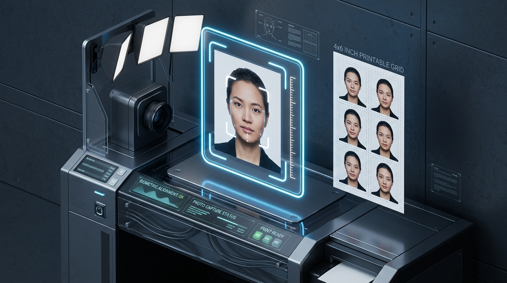

NADRA Smart CNIC Photo Size (354x472 px) & Biometric Rules (2026)
Executive Takeaways
- Zero Network Transmission: Binary document operations execute 100% inside your local device browser RAM.
- Lossless Vector Precision: Retains native typography, character spacing, and table borders.
- Instant & Offline Ready: Works seamlessly on mobile or desktop without internet connectivity.
If you need to scan your physical CNIC card onto a single A4 page for bank or SIM verification, use our dedicated CamScanner ID Card Mode.

Step-by-Step NADRA Smart CNIC Photo Tutorial
Pak-ID CompliantUpload or Capture
Take a front-facing selfie or portrait in bright natural lighting against a plain wall. Keep chin straight and eyes open.
Fit NADRA 354x472 Frame
Move and scale the crop box until your head fills 70-80% of the vertical frame, adhering to Pak-ID facial proportion rules.
Download Single & 8-Up Grid
Export the single 354x472 px image for the Pak-ID mobile app, or get an 8-up 4x6" 300 DPI printable sheet for physical submission.
1. Official NADRA Smart National ID Photo Specifications
Pakistan's National Database and Registration Authority (NADRA) maintains strict biometric photo validation algorithms for Pak-ID smart cards and NICOP renewals. Uploading photos with incorrect aspect ratios, shadows, or improper head sizing leads to immediate application rejection.
The official standard requires an exact 354x472 pixel resolution (35x45mm aspect ratio) with 70-80% face coverage and a crisp white/light background.
2. Printable 4x6 Inch 8-Up Photo Studio Grid
Instead of paying studio fees for multiple physical prints, LocalDoc automatically formats your cropped CNIC photo into a standard 4x6 inch (1200x1800 px @ 300 DPI) sheet containing 8 identical ready-to-cut copies. You can print this single sheet at any photo lab for pennies.
3. Technical Comparison Matrix
| Specification | NADRA Requirement | LocalDoc Auto-Preset |
|---|---|---|
| Pixel Dimensions | 354 x 472 pixels | Exact 354 x 472 px (100% Compliant) |
| Aspect Ratio | 3:4 (35mm x 45mm) | Strict 3:4 Biometric Grid |
| Resolution | 300 DPI | High-Resolution 300 DPI Output |
| Printable Sheet | 8 copies on 4x6 inch | Instant 8-Up 4x6 Studio Sheet |
4. Pro Tips for Maximum Quality
- Ensure both ears and forehead are clearly visible without hair covering facial landmarks.
- Do not wear white shirts to maintain strong contrast against the white background.
- Maintain a neutral facial expression with closed mouth and open eyes looking straight at the camera.
5. Frequently Asked Questions
Yes. NADRA utilizes the identical 354x472 pixel biometric standard for Smart CNIC, NICOP, and POC applications.
Yes, provided someone takes the photo from 4-5 feet away in good lighting. Avoid wide-angle close-up selfie distortion.